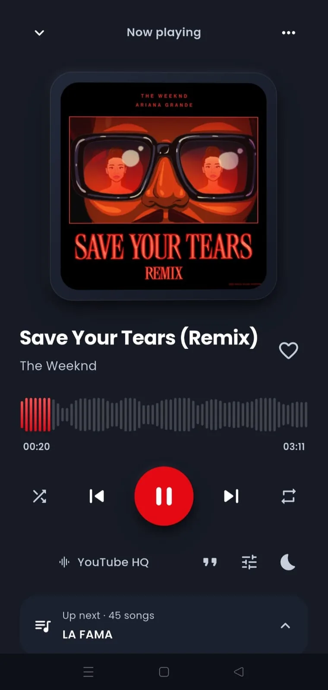
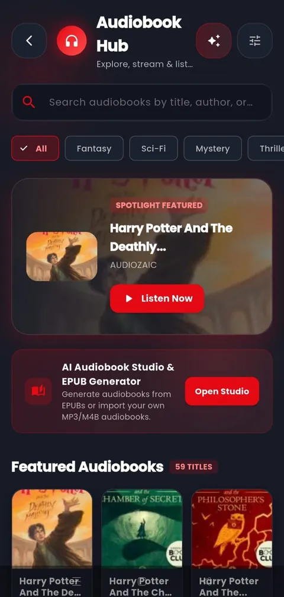
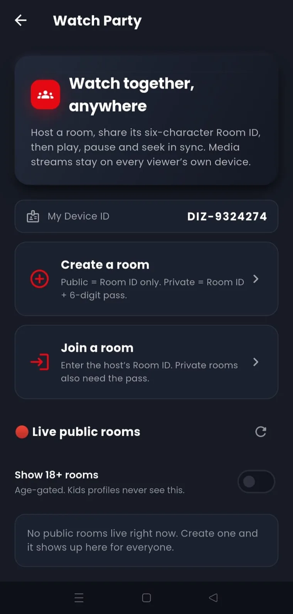
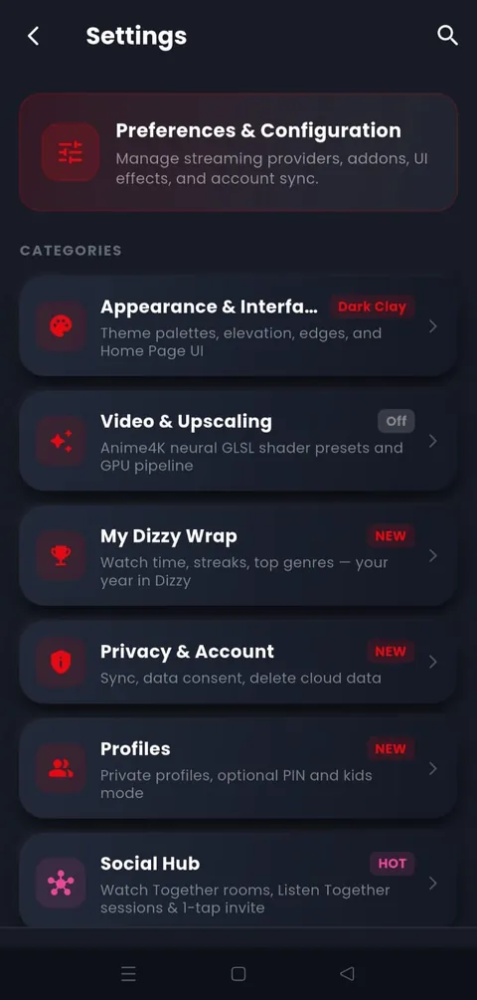

Watch Party
Host a room, share the six-character Room ID, and play, pause and seek stay locked for everyone in it. Drift corrects itself in about a second and a half. Chat and voice ride along — the stream never leaves anyone's own device.
latest·one app·free & open
Movies and series, music, manga, anime, audiobooks and live TV — one home row, one player, one identity. India-first, so a live cricket match sits at the top of Live TV when it matters. And when your people are in it, Watch Party keeps everyone on the same second.
✓ Free forever · ✓ No ads · ✓ No account to start · ✓ — downloads
Android · Windows · Linux — built in the open on GitHub, updated in place from inside the app.

One app
Not five apps taped together. The same home row, the same player, the same account — whether you're starting a series, a song, a chapter or a match.
Host a room, share the six-character Room ID, and play, pause and seek stay locked for everyone in it. Drift corrects itself in about a second and a half. Chat and voice ride along — the stream never leaves anyone's own device.
India-first live rows: when a match is on, it's pinned to the front with a LIVE badge instead of buried on channel 47. EPG guide, category lists, and zapping that can't queue up a zombie channel.
New and trending rows, latest releases per language, and resume that follows you across devices. One player for HLS, progressive files, torrents and debrid.
Home, Browse, Library, Radio and Search — plus queue, lyrics, equaliser, sleep timer and offline albums. Desi-first rows, with an exact-match search that never hands back a near-miss song.
A reader built for long nights — horizontal or vertical, pinch zoom, progress kept per title. Anime gets trending and airing rows, ratings and a one-tap next episode.
Chapters, speed and a sleep timer for the long ones. Bring your own MP3 or M4B, or put an EPUB through the built-in audio studio and listen to it instead of reading it.
Real @usernames, live friend requests and message threads that show up the moment they arrive. Tap a friend's invite and you land in their room, not a second empty one.
Downloads resume where they stopped, pause when the network drops, and live in one hub with a storage gauge. Flights, trains and dead zones included.
Watch together
One person hosts. Everyone else just follows — pause, seek and next episode included. Private rooms take a six-digit pass, and a room holds up to 20 people before it stops accepting guests.
Group chats and shared watch lists are next on the same roadmap.
Install
Screenshots









Drag, scroll, or tap a shot to enlarge
Built in the open
Every release comes out of GitHub Actions from the public repo — the same artifacts for you and for us. No mystery binaries, no telemetry you didn't agree to.
Download
FAQ
Two minutes from now
Install Dizzy, send a Room ID to whoever you'd watch with, and press play. That's the whole tutorial.
Free forever · Android, Windows & Linux · — downloads and counting